Белковые блюда: от 25 г белка на порцию
Для тренировок и сытного рациона, белок посчитан на порцию. 352 рецептов: у каждого время, калории и БЖУ на порцию, пошаговые инструкции и список покупок
 Творог с зеленью10 мин · 237 ккал · Б 27 г · Закуска
Творог с зеленью10 мин · 237 ккал · Б 27 г · Закуска Яичница с беконом12 мин · 473 ккал · Б 28 г · Второе блюдо
Яичница с беконом12 мин · 473 ккал · Б 28 г · Второе блюдо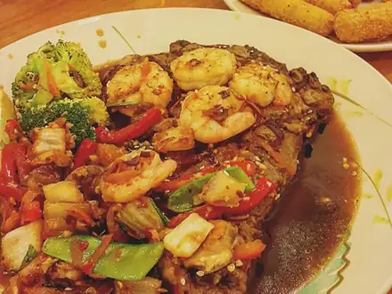
Креветки с чесноком15 мин · 295 ккал · Б 32 г · Второе блюдо Омлет с курицей15 мин · 361 ккал · Б 34 г · Завтрак
Омлет с курицей15 мин · 361 ккал · Б 34 г · Завтрак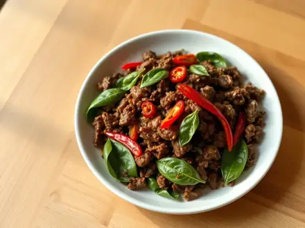
Фарш по-тайски с базиликом (пад кра пао)15 мин · 528 ккал · Б 28 г · Второе блюдо- Стейк сёмги на сковороде15 мин · 530 ккал · Б 40 г · Второе блюдо
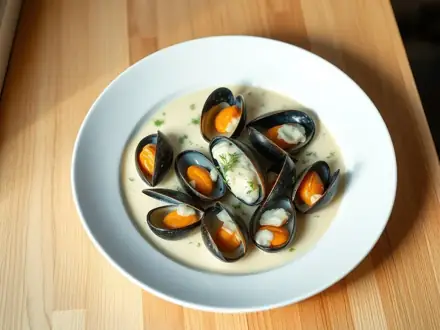
Мидии в сливочно-чесночном соусе15 мин · 424 ккал · Б 26 г · Второе блюдо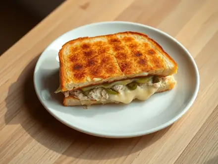
Горячие тосты с тунцом и сыром15 мин · 594 ккал · Б 37 г · Второе блюдо- Сосиски в лаваше с сыром на сковороде15 мин · 643 ккал · Б 30 г · Второе блюдо
 Омлет с тунцом и помидорами15 мин · 348 ккал · Б 37 г · Второе блюдо
Омлет с тунцом и помидорами15 мин · 348 ккал · Б 37 г · Второе блюдо Жареный сулугуни с помидорами15 мин · 570 ккал · Б 31 г · Второе блюдо
Жареный сулугуни с помидорами15 мин · 570 ккал · Б 31 г · Второе блюдо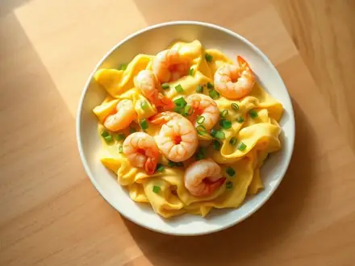
Креветки с яйцом по-китайски15 мин · 368 ккал · Б 33 г · Второе блюдо Лаваш с яйцом и сыром на сковороде15 мин · 620 ккал · Б 33 г · Второе блюдо
Лаваш с яйцом и сыром на сковороде15 мин · 620 ккал · Б 33 г · Второе блюдо- Панини с моцареллой, помидорами и базиликом15 мин · 591 ккал · Б 26 г · Второе блюдо
 Творожная масса с изюмом и сметаной15 мин · 346 ккал · Б 27 г · Завтрак
Творожная масса с изюмом и сметаной15 мин · 346 ккал · Б 27 г · Завтрак Говяжий стейк на сковороде20 мин · 504 ккал · Б 38 г · Второе блюдо
Говяжий стейк на сковороде20 мин · 504 ккал · Б 38 г · Второе блюдо Свинина с имбирём по-японски (сёгаяки)20 мин · 585 ккал · Б 30 г · Второе блюдо
Свинина с имбирём по-японски (сёгаяки)20 мин · 585 ккал · Б 30 г · Второе блюдо- Лосось терияки20 мин · 512 ккал · Б 42 г · Второе блюдо
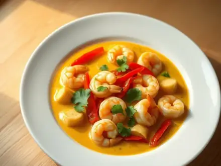
Креветки в кокосовом молоке с карри20 мин · 481 ккал · Б 30 г · Второе блюдо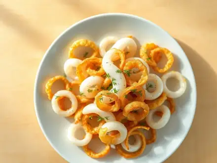
Кальмары жареные с луком20 мин · 378 ккал · Б 46 г · Второе блюдо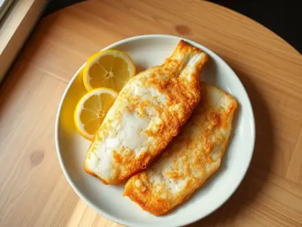
Хек жареный на сковороде20 мин · 292 ккал · Б 31 г · Второе блюдо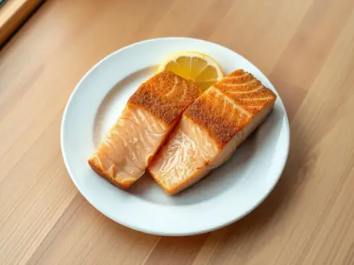
Горбуша жареная на сковороде20 мин · 380 ккал · Б 42 г · Второе блюдо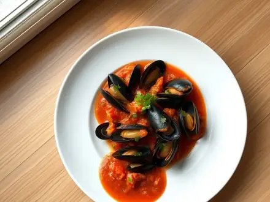
Мидии в томатном соусе с чесноком20 мин · 297 ккал · Б 25 г · Второе блюдо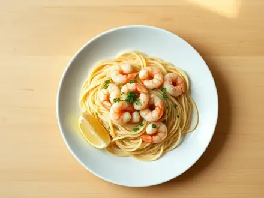
Паста с креветками в сливочно-чесночном соусе20 мин · 751 ккал · Б 42 г · Второе блюдо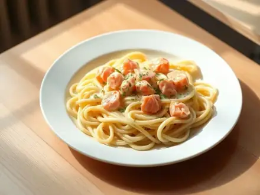
Паста с сёмгой в сливочном соусе20 мин · 655 ккал · Б 28 г · Второе блюдо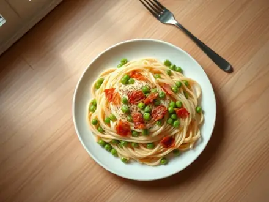
Паста с беконом и горошком в сливках20 мин · 765 ккал · Б 30 г · Второе блюдо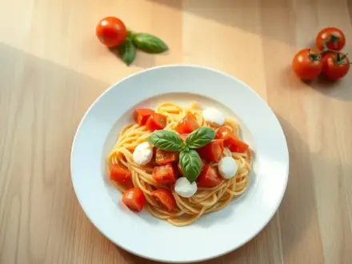
Паста с помидорами и моцареллой20 мин · 690 ккал · Б 27 г · Второе блюдо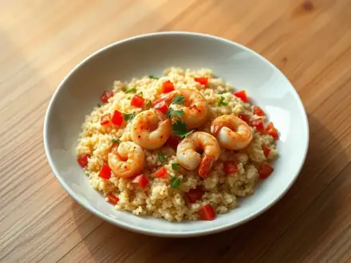
Кускус с креветками и чесноком20 мин · 542 ккал · Б 36 г · Второе блюдо- Чылбыр (яйца пашот на йогурте)20 мин · 562 ккал · Б 34 г · Второе блюдо
- Страчателла: итальянский суп с яйцом и шпинатом20 мин · 266 ккал · Б 33 г · Суп
 Салат «Тбилиси» с фасолью и говядиной20 мин · 465 ккал · Б 29 г · Салат
Салат «Тбилиси» с фасолью и говядиной20 мин · 465 ккал · Б 29 г · Салат Тёплый салат с креветками и авокадо20 мин · 460 ккал · Б 33 г · Салат
Тёплый салат с креветками и авокадо20 мин · 460 ккал · Б 33 г · Салат Фриттата с макаронами20 мин · 565 ккал · Б 31 г · Второе блюдо
Фриттата с макаронами20 мин · 565 ккал · Б 31 г · Второе блюдо Курица из супа в сметанном соусе с чесноком20 мин · 554 ккал · Б 48 г · Второе блюдо
Курица из супа в сметанном соусе с чесноком20 мин · 554 ккал · Б 48 г · Второе блюдо Миги - жареный хлеб с колбасками по-испански20 мин · 781 ккал · Б 28 г · Второе блюдо
Миги - жареный хлеб с колбасками по-испански20 мин · 781 ккал · Б 28 г · Второе блюдо- Кесадилья с курицей и сыром20 мин · 775 ккал · Б 54 г · Второе блюдо
 Конвертики из лаваша с ветчиной и сыром на сковороде20 мин · 768 ккал · Б 37 г · Второе блюдо
Конвертики из лаваша с ветчиной и сыром на сковороде20 мин · 768 ккал · Б 37 г · Второе блюдо Горячие бутерброды с фаршем на сковороде20 мин · 773 ккал · Б 31 г · Второе блюдо
Горячие бутерброды с фаршем на сковороде20 мин · 773 ккал · Б 31 г · Второе блюдо Гёзлеме из лаваша со шпинатом и брынзой20 мин · 627 ккал · Б 28 г · Второе блюдо
Гёзлеме из лаваша со шпинатом и брынзой20 мин · 627 ккал · Б 28 г · Второе блюдо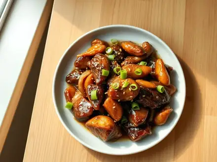
Куриная печень в соевом соусе с имбирём20 мин · 328 ккал · Б 33 г · Второе блюдо Свинина в медово-горчичном соусе на сковороде20 мин · 691 ккал · Б 35 г · Второе блюдо
Свинина в медово-горчичном соусе на сковороде20 мин · 691 ккал · Б 35 г · Второе блюдо Говядина терияки с кунжутом20 мин · 514 ккал · Б 36 г · Второе блюдо
Говядина терияки с кунжутом20 мин · 514 ккал · Б 36 г · Второе блюдо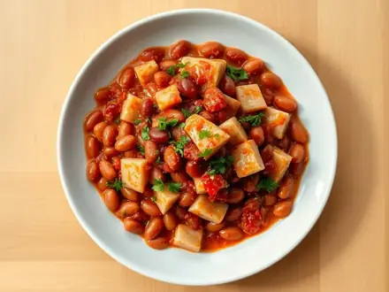
Тунец с фасолью в томатном соусе20 мин · 446 ккал · Б 38 г · Второе блюдо- Оладьи из рыбных консервов20 мин · 598 ккал · Б 39 г · Второе блюдо
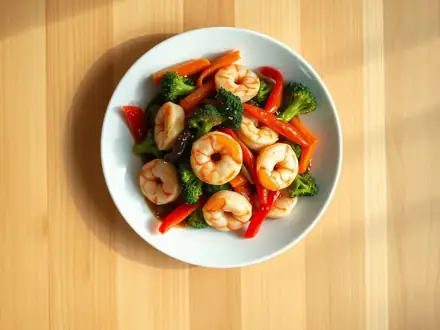
Креветки с овощами в соевом соусе20 мин · 397 ккал · Б 44 г · Второе блюдо Мидии, запечённые с сыром и чесноком20 мин · 532 ккал · Б 46 г · Второе блюдо
Мидии, запечённые с сыром и чесноком20 мин · 532 ккал · Б 46 г · Второе блюдо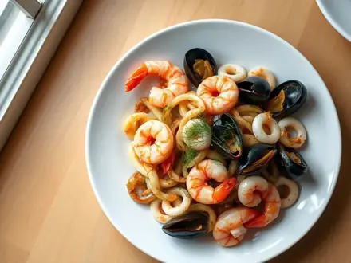
Морской коктейль, жаренный с луком и соевым соусом20 мин · 427 ккал · Б 44 г · Второе блюдо- Треска в горчично-сливочном соусе20 мин · 405 ккал · Б 38 г · Второе блюдо
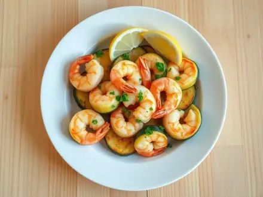
Кабачки с креветками и чесноком на сковороде20 мин · 369 ккал · Б 35 г · Второе блюдо Омлет с грибами и сыром20 мин · 394 ккал · Б 26 г · Второе блюдо
Омлет с грибами и сыром20 мин · 394 ккал · Б 26 г · Второе блюдо Жареный сыр в панировке по-чешски20 мин · 724 ккал · Б 34 г · Второе блюдо
Жареный сыр в панировке по-чешски20 мин · 724 ккал · Б 34 г · Второе блюдо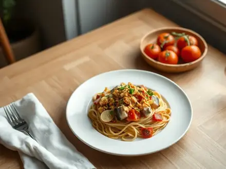
Паста с сардинами и помидорами20 мин · 705 ккал · Б 41 г · Второе блюдо Быстрый рамен с курицей и яйцом в мешочек20 мин · 551 ккал · Б 45 г · Суп
Быстрый рамен с курицей и яйцом в мешочек20 мин · 551 ккал · Б 45 г · Суп Салат «Обжорка» с говядиной и солёными огурцами20 мин · 556 ккал · Б 29 г · Салат
Салат «Обжорка» с говядиной и солёными огурцами20 мин · 556 ккал · Б 29 г · Салат Клаб-сэндвич с курицей и беконом20 мин · 667 ккал · Б 41 г · Второе блюдо
Клаб-сэндвич с курицей и беконом20 мин · 667 ккал · Б 41 г · Второе блюдо- Треска на пару с имбирём и соевым соусом по-кантонски20 мин · 358 ккал · Б 46 г · Второе блюдо
 Буррито на завтрак с яйцом и фасолью20 мин · 572 ккал · Б 31 г · Завтрак
Буррито на завтрак с яйцом и фасолью20 мин · 572 ккал · Б 31 г · Завтрак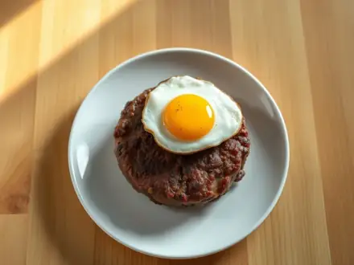
Бифштекс рубленый с яйцом22 мин · 601 ккал · Б 33 г · Второе блюдо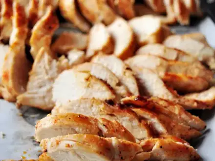
Сочная куриная грудка на сковороде25 мин · 275 ккал · Б 47 г · Второе блюдо- Рыба на пару с лимоном25 мин · 170 ккал · Б 36 г · Второе блюдо
 Горбуша в духовке в фольге25 мин · 335 ккал · Б 41 г · Второе блюдо
Горбуша в духовке в фольге25 мин · 335 ккал · Б 41 г · Второе блюдо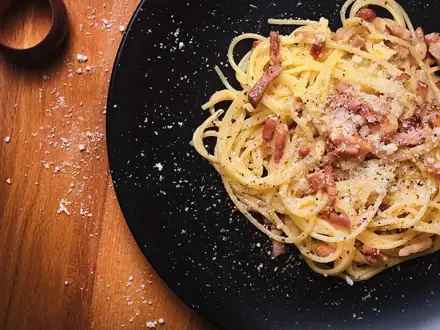
Спагетти карбонара25 мин · 962 ккал · Б 49 г · Второе блюдо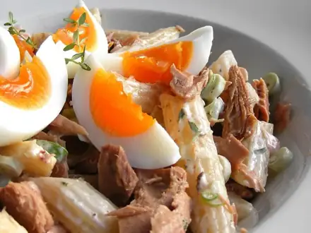
Паста с тунцом25 мин · 518 ккал · Б 26 г · Второе блюдо- Протеиновые блины на твороге25 мин · 344 ккал · Б 29 г · Завтрак
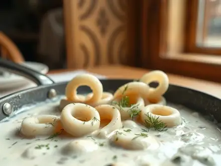
Кальмары тушёные в сметане25 мин · 355 ккал · Б 38 г · Второе блюдо Салат из курицы из супа25 мин · 369 ккал · Б 31 г · Салат
Салат из курицы из супа25 мин · 369 ккал · Б 31 г · Салат- Куриное филе в сливочном соусе с чесноком25 мин · 453 ккал · Б 49 г · Второе блюдо
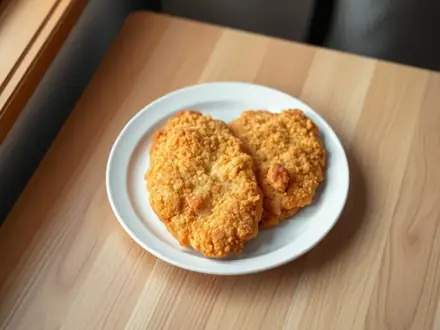
Куриные отбивные в кляре25 мин · 428 ккал · Б 54 г · Второе блюдо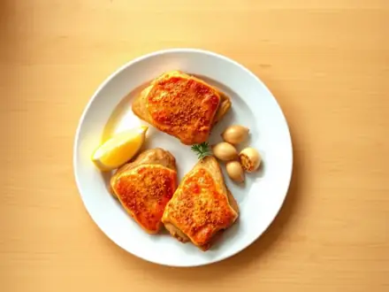
Куриные бёдра на сковороде с чесноком и паприкой25 мин · 476 ккал · Б 43 г · Второе блюдо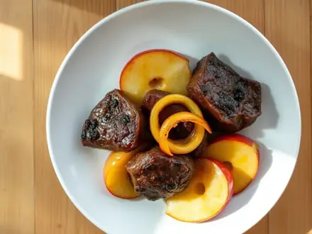
Куриная печень с яблоками и луком25 мин · 438 ккал · Б 34 г · Второе блюдо- Курица гунбао с арахисом25 мин · 445 ккал · Б 46 г · Второе блюдо
- Курица сатай в арахисовом соусе25 мин · 483 ккал · Б 46 г · Второе блюдо
- Куриная пикката в лимонном соусе25 мин · 439 ккал · Б 49 г · Второе блюдо
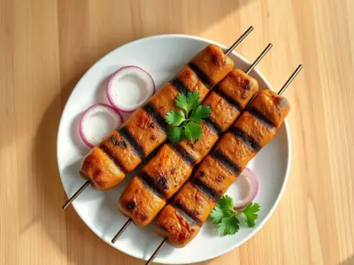
Куриный люля-кебаб на сковороде25 мин · 359 ккал · Б 36 г · Второе блюдо- Курица по-мексикански с фасолью и кукурузой25 мин · 320 ккал · Б 37 г · Второе блюдо
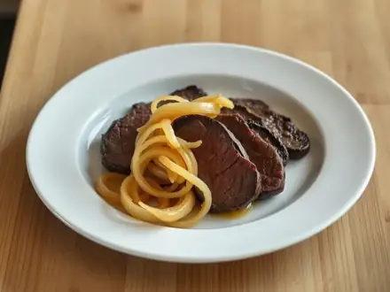
Говяжья печень жареная с луком25 мин · 375 ккал · Б 32 г · Второе блюдо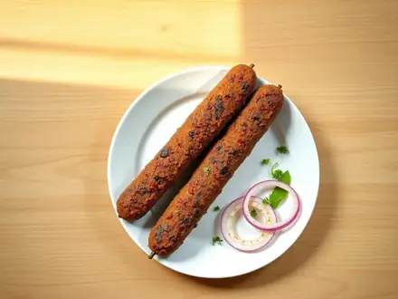
Люля-кебаб на сковороде25 мин · 502 ккал · Б 30 г · Второе блюдо Баранина с луком и зирой на сковороде25 мин · 487 ккал · Б 27 г · Второе блюдо
Баранина с луком и зирой на сковороде25 мин · 487 ккал · Б 27 г · Второе блюдо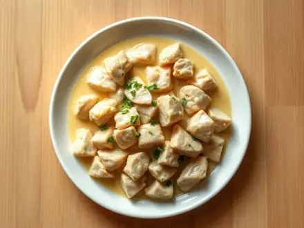
Индейка в сливочно-горчичном соусе25 мин · 407 ккал · Б 42 г · Второе блюдо- Шницель из индейки25 мин · 447 ккал · Б 40 г · Второе блюдо
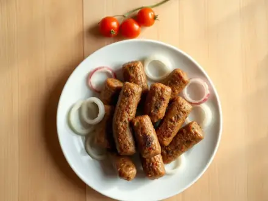
Чевапчичи на сковороде25 мин · 502 ккал · Б 29 г · Второе блюдо- Треска в сметане на сковороде25 мин · 328 ккал · Б 32 г · Второе блюдо
 Креветки в кляре25 мин · 513 ккал · Б 37 г · Второе блюдо
Креветки в кляре25 мин · 513 ккал · Б 37 г · Второе блюдо Креветки саганаки с фетой25 мин · 319 ккал · Б 33 г · Второе блюдо
Креветки саганаки с фетой25 мин · 319 ккал · Б 33 г · Второе блюдо Кольца кальмаров в кляре25 мин · 488 ккал · Б 36 г · Второе блюдо
Кольца кальмаров в кляре25 мин · 488 ккал · Б 36 г · Второе блюдо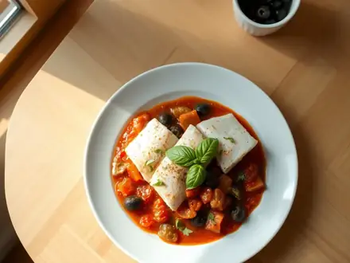
Хек в томатном соусе по-итальянски25 мин · 254 ккал · Б 30 г · Второе блюдо- Лосось в сливочном соусе со шпинатом25 мин · 531 ккал · Б 37 г · Второе блюдо
 Лосось в медово-горчичном соусе в духовке25 мин · 419 ккал · Б 35 г · Второе блюдо
Лосось в медово-горчичном соусе в духовке25 мин · 419 ккал · Б 35 г · Второе блюдо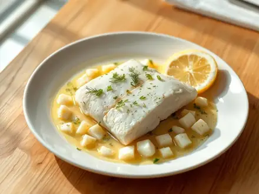
Рыба по-польски25 мин · 340 ккал · Б 33 г · Второе блюдо Треска в сырной корочке в духовке25 мин · 283 ккал · Б 37 г · Второе блюдо
Треска в сырной корочке в духовке25 мин · 283 ккал · Б 37 г · Второе блюдо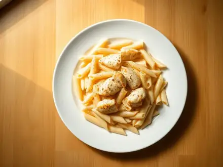
Паста с курицей в сливочном соусе25 мин · 678 ккал · Б 40 г · Второе блюдо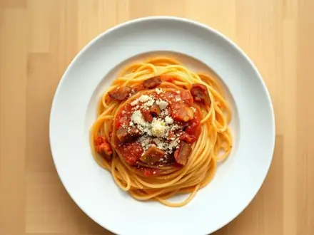
Паста аматричана с беконом в томатном соусе25 мин · 741 ккал · Б 30 г · Второе блюдо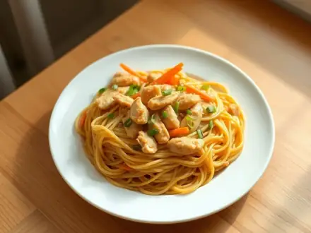
Лапша с курицей в арахисовом соусе25 мин · 696 ккал · Б 49 г · Второе блюдо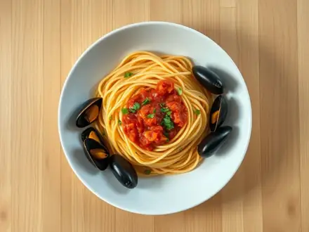
Паста с мидиями в томатном соусе25 мин · 637 ккал · Б 30 г · Второе блюдо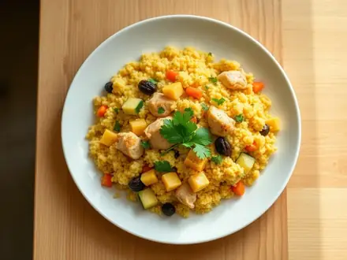
Кускус с курицей и овощами по-мароккански25 мин · 557 ккал · Б 38 г · Второе блюдо Яйца со шпинатом и сыром в духовке25 мин · 576 ккал · Б 30 г · Второе блюдо
Яйца со шпинатом и сыром в духовке25 мин · 576 ккал · Б 30 г · Второе блюдо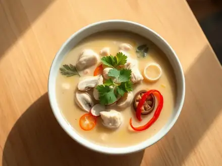
Тайский суп с кокосовым молоком и курицей25 мин · 346 ккал · Б 29 г · Суп Тёплый салат с говядиной по-тайски25 мин · 413 ккал · Б 32 г · Салат
Тёплый салат с говядиной по-тайски25 мин · 413 ккал · Б 32 г · Салат Салат с кальмарами, яйцом и огурцом25 мин · 415 ккал · Б 38 г · Салат
Салат с кальмарами, яйцом и огурцом25 мин · 415 ккал · Б 38 г · Салат Тако-салат с фаршем и фасолью25 мин · 542 ккал · Б 32 г · Салат
Тако-салат с фаршем и фасолью25 мин · 542 ккал · Б 32 г · Салат Лионский салат с беконом и яйцом пашот25 мин · 582 ккал · Б 25 г · Салат
Лионский салат с беконом и яйцом пашот25 мин · 582 ккал · Б 25 г · Салат Хэш из картошки и отварной говядины25 мин · 732 ккал · Б 45 г · Второе блюдо
Хэш из картошки и отварной говядины25 мин · 732 ккал · Б 45 г · Второе блюдо Оякодон - рис с курицей и яйцом по-японски25 мин · 713 ккал · Б 44 г · Второе блюдо
Оякодон - рис с курицей и яйцом по-японски25 мин · 713 ккал · Б 44 г · Второе блюдо Ропа вьеха - рваная говядина в томатном соусе25 мин · 625 ккал · Б 49 г · Второе блюдо
Ропа вьеха - рваная говядина в томатном соусе25 мин · 625 ккал · Б 49 г · Второе блюдо Мексиканский рис с фаршем и фасолью на сковороде25 мин · 660 ккал · Б 32 г · Второе блюдо
Мексиканский рис с фаршем и фасолью на сковороде25 мин · 660 ккал · Б 32 г · Второе блюдо- Тако с говяжьим фаршем25 мин · 786 ккал · Б 33 г · Второе блюдо
 Крок-месье25 мин · 755 ккал · Б 31 г · Второе блюдо
Крок-месье25 мин · 755 ккал · Б 31 г · Второе блюдо- Ленивые чебуреки из лаваша с фаршем25 мин · 736 ккал · Б 31 г · Второе блюдо
- Бань ми - вьетнамский сэндвич с курицей25 мин · 681 ккал · Б 41 г · Второе блюдо
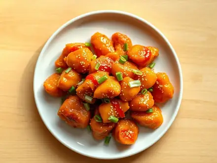
Курица в апельсиновом соусе по-китайски25 мин · 417 ккал · Б 41 г · Второе блюдо- Курица по-тоскански со шпинатом и помидорами25 мин · 451 ккал · Б 47 г · Второе блюдо
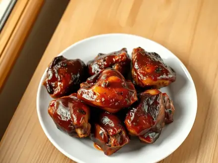
Куриные бёдра в соусе барбекю на сковороде25 мин · 475 ккал · Б 37 г · Второе блюдо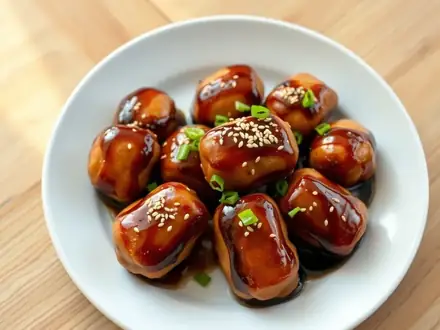
Цукунэ: японские котлетки из куриного фарша в соусе25 мин · 368 ккал · Б 32 г · Второе блюдо Медальоны из индейки в беконе на сковороде25 мин · 507 ккал · Б 56 г · Второе блюдо
Медальоны из индейки в беконе на сковороде25 мин · 507 ккал · Б 56 г · Второе блюдо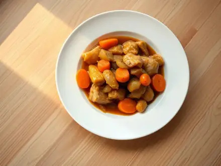
Индейка с курагой и луком на сковороде25 мин · 347 ккал · Б 42 г · Второе блюдо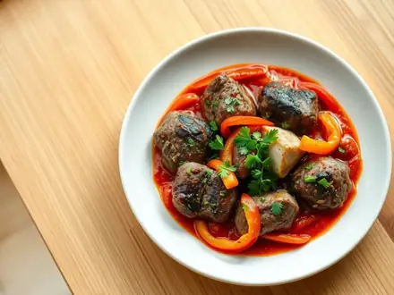
Куриная печень, тушённая с болгарским перцем и помидорами25 мин · 365 ккал · Б 35 г · Второе блюдо- Куриная печень в кляре25 мин · 457 ккал · Б 38 г · Второе блюдо
 Шницель из свинины в панировке25 мин · 705 ккал · Б 32 г · Второе блюдо
Шницель из свинины в панировке25 мин · 705 ккал · Б 32 г · Второе блюдо Свинина с болгарским перцем в соевом соусе25 мин · 667 ккал · Б 32 г · Второе блюдо
Свинина с болгарским перцем в соевом соусе25 мин · 667 ккал · Б 32 г · Второе блюдо Говядина по-монгольски с зелёным луком25 мин · 640 ккал · Б 36 г · Второе блюдо
Говядина по-монгольски с зелёным луком25 мин · 640 ккал · Б 36 г · Второе блюдо Свиные отбивные в горчично-сливочном соусе25 мин · 702 ккал · Б 31 г · Второе блюдо
Свиные отбивные в горчично-сливочном соусе25 мин · 702 ккал · Б 31 г · Второе блюдо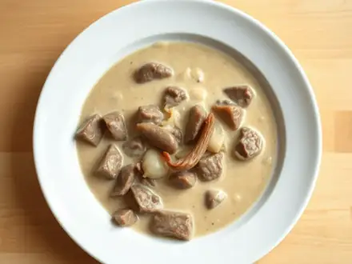
Говяжья печень в сметане с луком25 мин · 465 ккал · Б 30 г · Второе блюдо- Отбивные из говяжьей печени в кляре25 мин · 456 ккал · Б 34 г · Второе блюдо
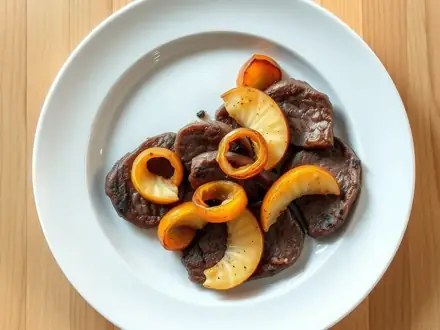
Печень по-берлински с яблоками и луком25 мин · 538 ккал · Б 34 г · Второе блюдо Каре ягнёнка на сковороде с чесноком25 мин · 682 ккал · Б 40 г · Второе блюдо
Каре ягнёнка на сковороде с чесноком25 мин · 682 ккал · Б 40 г · Второе блюдо Острая свинина по-корейски (чеюк покым)25 мин · 720 ккал · Б 35 г · Второе блюдо
Острая свинина по-корейски (чеюк покым)25 мин · 720 ккал · Б 35 г · Второе блюдо Свинина юйсян с морковью по-китайски25 мин · 641 ккал · Б 27 г · Второе блюдо
Свинина юйсян с морковью по-китайски25 мин · 641 ккал · Б 27 г · Второе блюдо Говядина со стручковой фасолью по-китайски25 мин · 500 ккал · Б 33 г · Второе блюдо
Говядина со стручковой фасолью по-китайски25 мин · 500 ккал · Б 33 г · Второе блюдо Ромштекс из говядины25 мин · 672 ккал · Б 40 г · Второе блюдо
Ромштекс из говядины25 мин · 672 ккал · Б 40 г · Второе блюдо Стейк из свиной шеи на сковороде25 мин · 629 ккал · Б 32 г · Второе блюдо
Стейк из свиной шеи на сковороде25 мин · 629 ккал · Б 32 г · Второе блюдо Свинина алла пиццайола в томатном соусе25 мин · 641 ккал · Б 31 г · Второе блюдо
Свинина алла пиццайола в томатном соусе25 мин · 641 ккал · Б 31 г · Второе блюдо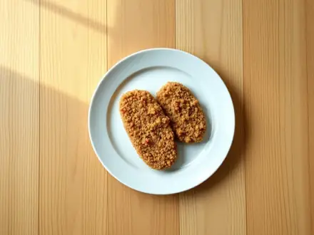
Шницель рубленый из фарша в сухарях25 мин · 541 ккал · Б 27 г · Второе блюдо- Яйца с фаршем по-турецки (кыймалы юмурта)25 мин · 635 ккал · Б 38 г · Второе блюдо
 Сосиски в беконе с сыром в духовке25 мин · 604 ккал · Б 28 г · Второе блюдо
Сосиски в беконе с сыром в духовке25 мин · 604 ккал · Б 28 г · Второе блюдо- Треска с помидорами и маслинами на сковороде25 мин · 445 ккал · Б 48 г · Второе блюдо
- Горбуша в сливочном соусе на сковороде25 мин · 516 ккал · Б 44 г · Второе блюдо
- Жареные кальмары с овощами по-корейски25 мин · 312 ккал · Б 33 г · Второе блюдо
- Кальмары в томатном соусе с чесноком25 мин · 345 ккал · Б 38 г · Второе блюдо
- Котлеты из крабовых палочек с сыром25 мин · 588 ккал · Б 28 г · Второе блюдо
- Минтай, тушённый в молоке с луком25 мин · 321 ккал · Б 41 г · Второе блюдо
 Горбуша в апельсиновом соусе в духовке25 мин · 376 ккал · Б 42 г · Второе блюдо
Горбуша в апельсиновом соусе в духовке25 мин · 376 ккал · Б 42 г · Второе блюдо Омлетный рулет с ветчиной и сыром в духовке25 мин · 406 ккал · Б 26 г · Второе блюдо
Омлетный рулет с ветчиной и сыром в духовке25 мин · 406 ккал · Б 26 г · Второе блюдо Фриттата с беконом и помидорами25 мин · 424 ккал · Б 27 г · Второе блюдо
Фриттата с беконом и помидорами25 мин · 424 ккал · Б 27 г · Второе блюдо- Несладкие сырники с зеленью и сыром25 мин · 416 ккал · Б 33 г · Второе блюдо
- Паста с кальмарами в томатном соусе25 мин · 670 ккал · Б 40 г · Второе блюдо
- Макароны с ветчиной и сыром на сковороде25 мин · 724 ккал · Б 29 г · Второе блюдо
- Киноа с курицей и брокколи25 мин · 644 ккал · Б 50 г · Второе блюдо
- Котлеты из брокколи с сыром25 мин · 509 ккал · Б 26 г · Второе блюдо
 Салат с курицей и огурцами по-китайски25 мин · 289 ккал · Б 39 г · Салат
Салат с курицей и огурцами по-китайски25 мин · 289 ккал · Б 39 г · Салат Салат с курицей, черносливом и грецкими орехами25 мин · 605 ккал · Б 36 г · Салат
Салат с курицей, черносливом и грецкими орехами25 мин · 605 ккал · Б 36 г · Салат Тёплый салат с курицей и стручковой фасолью25 мин · 441 ккал · Б 46 г · Салат
Тёплый салат с курицей и стручковой фасолью25 мин · 441 ккал · Б 46 г · Салат Салат «Нисуаз» с тунцом25 мин · 495 ккал · Б 34 г · Салат
Салат «Нисуаз» с тунцом25 мин · 495 ккал · Б 34 г · Салат Фахитос с курицей и болгарским перцем25 мин · 669 ккал · Б 47 г · Второе блюдо
Фахитос с курицей и болгарским перцем25 мин · 669 ккал · Б 47 г · Второе блюдо Хачапури из батона с яйцом в духовке25 мин · 657 ккал · Б 29 г · Второе блюдо
Хачапури из батона с яйцом в духовке25 мин · 657 ккал · Б 29 г · Второе блюдо- Курица с чесноком по-испански (польо аль ахильо)25 мин · 537 ккал · Б 37 г · Второе блюдо
 Тёплый салат с куриной печенью и грушей25 мин · 386 ккал · Б 30 г · Салат
Тёплый салат с куриной печенью и грушей25 мин · 386 ккал · Б 30 г · Салат- Фасоль в томатном соусе с беконом28 мин · 581 ккал · Б 32 г · Второе блюдо
- Сырники30 мин · 398 ккал · Б 28 г · Завтрак
- Куриная печень со сметаной30 мин · 502 ккал · Б 35 г · Второе блюдо
- Минтай в кляре30 мин · 366 ккал · Б 30 г · Второе блюдо
- Вок с курицей и овощами30 мин · 665 ккал · Б 50 г · Второе блюдо
- Курица терияки30 мин · 485 ккал · Б 38 г · Второе блюдо
- Жареная рисовая лапша с креветками30 мин · 757 ккал · Б 41 г · Второе блюдо
- Ленивые вареники30 мин · 365 ккал · Б 29 г · Завтрак
 Макароны по-флотски из отварного мяса30 мин · 631 ккал · Б 34 г · Второе блюдо
Макароны по-флотски из отварного мяса30 мин · 631 ккал · Б 34 г · Второе блюдо- Курица с грибами в сметане30 мин · 426 ккал · Б 46 г · Второе блюдо
- Куриные голени в томатном соусе на сковороде30 мин · 361 ккал · Б 32 г · Второе блюдо
 Хрустящие куриные крылья в духовке30 мин · 364 ккал · Б 32 г · Второе блюдо
Хрустящие куриные крылья в духовке30 мин · 364 ккал · Б 32 г · Второе блюдо- Рубленые куриные котлеты с сыром30 мин · 465 ккал · Б 50 г · Второе блюдо
- Куриные сердечки жареные с луком30 мин · 408 ккал · Б 33 г · Второе блюдо
- Курица в кисло-сладком соусе30 мин · 464 ккал · Б 44 г · Второе блюдо
 Куриные отбивные с помидорами и сыром в духовке30 мин · 442 ккал · Б 59 г · Второе блюдо
Куриные отбивные с помидорами и сыром в духовке30 мин · 442 ккал · Б 59 г · Второе блюдо- Курица качаторе30 мин · 552 ккал · Б 45 г · Второе блюдо
- Куриный шиш-кебаб в йогурте на сковороде-гриль30 мин · 314 ккал · Б 50 г · Второе блюдо
- Чкмерули - курица в сливочно-чесночном соусе по-грузински30 мин · 631 ккал · Б 44 г · Второе блюдо
- Куриные биточки с кабачком30 мин · 327 ккал · Б 25 г · Второе блюдо
 Куриное филе в медово-горчичном соусе в духовке30 мин · 329 ккал · Б 49 г · Второе блюдо
Куриное филе в медово-горчичном соусе в духовке30 мин · 329 ккал · Б 49 г · Второе блюдо Курица, запечённая с брокколи и сыром30 мин · 481 ккал · Б 53 г · Второе блюдо
Курица, запечённая с брокколи и сыром30 мин · 481 ккал · Б 53 г · Второе блюдо- Пожарские котлеты из курицы30 мин · 497 ккал · Б 30 г · Второе блюдо
 Курица с черносливом в сметане30 мин · 599 ккал · Б 39 г · Второе блюдо
Курица с черносливом в сметане30 мин · 599 ккал · Б 39 г · Второе блюдо- Курица с кабачками и помидорами на сковороде30 мин · 316 ккал · Б 42 г · Второе блюдо
 Свиные отбивные в кляре30 мин · 590 ккал · Б 29 г · Второе блюдо
Свиные отбивные в кляре30 мин · 590 ккал · Б 29 г · Второе блюдо- Котлеты из индейки с кабачком30 мин · 337 ккал · Б 27 г · Второе блюдо
- Печёночные оладьи из говяжьей печени30 мин · 374 ккал · Б 28 г · Второе блюдо
 Свинина в кисло-сладком соусе30 мин · 689 ккал · Б 29 г · Второе блюдо
Свинина в кисло-сладком соусе30 мин · 689 ккал · Б 29 г · Второе блюдо Свиные медальоны в сливочно-грибном соусе30 мин · 704 ккал · Б 33 г · Второе блюдо
Свиные медальоны в сливочно-грибном соусе30 мин · 704 ккал · Б 33 г · Второе блюдо Кордон блю из свинины30 мин · 771 ккал · Б 39 г · Второе блюдо
Кордон блю из свинины30 мин · 771 ккал · Б 39 г · Второе блюдо- Шведские фрикадельки в сливочном соусе30 мин · 584 ккал · Б 26 г · Второе блюдо
- Зразы мясные с яйцом30 мин · 546 ккал · Б 29 г · Второе блюдо
 Пулькоги из говядины30 мин · 465 ккал · Б 34 г · Второе блюдо
Пулькоги из говядины30 мин · 465 ккал · Б 34 г · Второе блюдо Поджарка из свинины с луком30 мин · 572 ккал · Б 28 г · Второе блюдо
Поджарка из свинины с луком30 мин · 572 ккал · Б 28 г · Второе блюдо Сувлаки из свинины на сковороде30 мин · 535 ккал · Б 27 г · Второе блюдо
Сувлаки из свинины на сковороде30 мин · 535 ккал · Б 27 г · Второе блюдо- Рыба под маринадом (минтай с морковью и луком)30 мин · 276 ккал · Б 26 г · Второе блюдо
 Рыбные палочки домашние в духовке30 мин · 295 ккал · Б 34 г · Второе блюдо
Рыбные палочки домашние в духовке30 мин · 295 ккал · Б 34 г · Второе блюдо Рыба, запечённая с омлетом, как в детском саду30 мин · 245 ккал · Б 32 г · Второе блюдо
Рыба, запечённая с омлетом, как в детском саду30 мин · 245 ккал · Б 32 г · Второе блюдо Запеканка с тунцом и брокколи30 мин · 314 ккал · Б 29 г · Второе блюдо
Запеканка с тунцом и брокколи30 мин · 314 ккал · Б 29 г · Второе блюдо- Рыба в кисло-сладком соусе по-китайски30 мин · 381 ккал · Б 29 г · Второе блюдо
- Макароны с курицей и овощами на сковороде30 мин · 557 ккал · Б 35 г · Второе блюдо
 Яичная лапша с говядиной и овощами30 мин · 621 ккал · Б 33 г · Второе блюдо
Яичная лапша с говядиной и овощами30 мин · 621 ккал · Б 33 г · Второе блюдо Спагетти с фрикадельками в томатном соусе30 мин · 667 ккал · Б 29 г · Второе блюдо
Спагетти с фрикадельками в томатном соусе30 мин · 667 ккал · Б 29 г · Второе блюдо- Жареная картошка с курицей на сковороде30 мин · 475 ккал · Б 36 г · Второе блюдо
- Курица с рисом в сливочном соусе на сковороде30 мин · 516 ккал · Б 32 г · Второе блюдо
- Гречка с куриной печенью и луком30 мин · 576 ккал · Б 36 г · Второе блюдо
- Булгур с курицей и помидорами30 мин · 464 ккал · Б 34 г · Второе блюдо
- Пшено с курицей и овощами30 мин · 441 ккал · Б 32 г · Второе блюдо
 Кабачки, запечённые с творогом и сыром30 мин · 487 ккал · Б 37 г · Второе блюдо
Кабачки, запечённые с творогом и сыром30 мин · 487 ккал · Б 37 г · Второе блюдо Запеканка из брокколи с яйцом и сыром30 мин · 466 ккал · Б 33 г · Второе блюдо
Запеканка из брокколи с яйцом и сыром30 мин · 466 ккал · Б 33 г · Второе блюдо Жюльен с грибами30 мин · 559 ккал · Б 28 г · Второе блюдо
Жюльен с грибами30 мин · 559 ккал · Б 28 г · Второе блюдо- Чушки бюрек (перцы с брынзой в кляре)30 мин · 637 ккал · Б 30 г · Второе блюдо
- Чихиртма из курицы30 мин · 251 ккал · Б 28 г · Суп
 Салат с куриной печенью и солёными огурцами30 мин · 494 ккал · Б 32 г · Салат
Салат с куриной печенью и солёными огурцами30 мин · 494 ккал · Б 32 г · Салат Салат Кобб с курицей, беконом и авокадо30 мин · 604 ккал · Б 43 г · Салат
Салат Кобб с курицей, беконом и авокадо30 мин · 604 ккал · Б 43 г · Салат Тёплый салат с чечевицей и фетой30 мин · 430 ккал · Б 25 г · Салат
Тёплый салат с чечевицей и фетой30 мин · 430 ккал · Б 25 г · Салат Салат с курицей, жареными грибами и сыром30 мин · 456 ккал · Б 35 г · Салат
Салат с курицей, жареными грибами и сыром30 мин · 456 ккал · Б 35 г · Салат Запеканка из пюре с курицей и сыром30 мин · 615 ккал · Б 41 г · Второе блюдо
Запеканка из пюре с курицей и сыром30 мин · 615 ккал · Б 41 г · Второе блюдо Котлеты из отварной курицы30 мин · 518 ккал · Б 41 г · Второе блюдо
Котлеты из отварной курицы30 мин · 518 ккал · Б 41 г · Второе блюдо Энчилада с курицей30 мин · 767 ккал · Б 48 г · Второе блюдо
Энчилада с курицей30 мин · 767 ккал · Б 48 г · Второе блюдо- Курица тикка масала30 мин · 399 ккал · Б 45 г · Второе блюдо
- Курица со шпинатом по-индийски (палак чикен)30 мин · 348 ккал · Б 44 г · Второе блюдо
- Курица караагэ по-японски30 мин · 586 ккал · Б 37 г · Второе блюдо
- Курица адобо по-филиппински30 мин · 454 ккал · Б 38 г · Второе блюдо
- Куриный паприкаш по-венгерски30 мин · 604 ккал · Б 40 г · Второе блюдо
- Дак-кальби: острая курица с капустой по-корейски30 мин · 453 ккал · Б 34 г · Второе блюдо
 Жульен с курицей и грибами30 мин · 410 ккал · Б 37 г · Второе блюдо
Жульен с курицей и грибами30 мин · 410 ккал · Б 37 г · Второе блюдо- Курица с лимоном и оливками по-мароккански30 мин · 507 ккал · Б 37 г · Второе блюдо
- Курица в карамельном соусе с имбирём по-вьетнамски30 мин · 500 ккал · Б 38 г · Второе блюдо
- Куриные зразы с яйцом и зелёным луком30 мин · 504 ккал · Б 39 г · Второе блюдо
- Курица с помидорами и яйцами по-азербайджански (чыгыртма)30 мин · 412 ккал · Б 49 г · Второе блюдо
- Курица с ореховым соусом баже30 мин · 644 ккал · Б 42 г · Второе блюдо
- Гуляш из индейки с подливкой30 мин · 252 ккал · Б 36 г · Второе блюдо
- Куриные сердечки с грибами в сливках30 мин · 476 ккал · Б 32 г · Второе блюдо
 Куриные крылья с чесноком и пармезаном на сковороде30 мин · 411 ккал · Б 32 г · Второе блюдо
Куриные крылья с чесноком и пармезаном на сковороде30 мин · 411 ккал · Б 32 г · Второе блюдо Паприкаш из свинины по-венгерски30 мин · 625 ккал · Б 28 г · Второе блюдо
Паприкаш из свинины по-венгерски30 мин · 625 ккал · Б 28 г · Второе блюдо Свинина в кокосовом карри30 мин · 712 ккал · Б 26 г · Второе блюдо
Свинина в кокосовом карри30 мин · 712 ккал · Б 26 г · Второе блюдо Шашлык из свинины на сковороде30 мин · 553 ккал · Б 28 г · Второе блюдо
Шашлык из свинины на сковороде30 мин · 553 ккал · Б 28 г · Второе блюдо Садж из баранины с овощами на сковороде30 мин · 530 ккал · Б 27 г · Второе блюдо
Садж из баранины с овощами на сковороде30 мин · 530 ккал · Б 27 г · Второе блюдо Чашушули из свинины по-грузински30 мин · 542 ккал · Б 28 г · Второе блюдо
Чашушули из свинины по-грузински30 мин · 542 ккал · Б 28 г · Второе блюдо Свинина с черносливом на сковороде30 мин · 571 ккал · Б 26 г · Второе блюдо
Свинина с черносливом на сковороде30 мин · 571 ккал · Б 26 г · Второе блюдо Куырдак из баранины с печенью30 мин · 459 ккал · Б 32 г · Второе блюдо
Куырдак из баранины с печенью30 мин · 459 ккал · Б 32 г · Второе блюдо- Котлеты в сметанном соусе на сковороде30 мин · 557 ккал · Б 26 г · Второе блюдо
- Кабачки с фаршем и помидорами на сковороде30 мин · 511 ккал · Б 26 г · Второе блюдо
 Мясные гнёзда с грибами и сыром в духовке30 мин · 527 ккал · Б 32 г · Второе блюдо
Мясные гнёзда с грибами и сыром в духовке30 мин · 527 ккал · Б 32 г · Второе блюдо- Кима - фарш с зелёным горошком по-индийски30 мин · 459 ккал · Б 25 г · Второе блюдо
 Пицца из фарша без теста в духовке30 мин · 507 ккал · Б 34 г · Второе блюдо
Пицца из фарша без теста в духовке30 мин · 507 ккал · Б 34 г · Второе блюдо Рыба по-французски из минтая в духовке30 мин · 469 ккал · Б 44 г · Второе блюдо
Рыба по-французски из минтая в духовке30 мин · 469 ккал · Б 44 г · Второе блюдо- Скумбрия, тушённая в томате с луком и морковью30 мин · 365 ккал · Б 25 г · Второе блюдо
 Жюльен с креветками и грибами30 мин · 395 ккал · Б 31 г · Второе блюдо
Жюльен с креветками и грибами30 мин · 395 ккал · Б 31 г · Второе блюдо Минтай, запечённый с грибами в сметане30 мин · 413 ккал · Б 42 г · Второе блюдо
Минтай, запечённый с грибами в сметане30 мин · 413 ккал · Б 42 г · Второе блюдо Кальмары, фаршированные яйцом и сыром, в духовке30 мин · 681 ккал · Б 60 г · Второе блюдо
Кальмары, фаршированные яйцом и сыром, в духовке30 мин · 681 ккал · Б 60 г · Второе блюдо Хек, запечённый с овощами в духовке30 мин · 335 ккал · Б 36 г · Второе блюдо
Хек, запечённый с овощами в духовке30 мин · 335 ккал · Б 36 г · Второе блюдо- Рыбное суфле из минтая на пару30 мин · 279 ккал · Б 33 г · Второе блюдо
- Карп жареный на сковороде кусочками30 мин · 396 ккал · Б 30 г · Второе блюдо
 Шашлычки из сёмги с овощами в духовке30 мин · 442 ккал · Б 35 г · Второе блюдо
Шашлычки из сёмги с овощами в духовке30 мин · 442 ккал · Б 35 г · Второе блюдо Перцы, фаршированные тунцом и сыром30 мин · 282 ккал · Б 28 г · Второе блюдо
Перцы, фаршированные тунцом и сыром30 мин · 282 ккал · Б 28 г · Второе блюдо Яйца Морне под сырным соусом30 мин · 492 ккал · Б 27 г · Второе блюдо
Яйца Морне под сырным соусом30 мин · 492 ккал · Б 27 г · Второе блюдо- Котлеты из варёных яиц с сыром30 мин · 466 ккал · Б 26 г · Второе блюдо
 Джамбалая с курицей и колбасками30 мин · 598 ккал · Б 25 г · Второе блюдо
Джамбалая с курицей и колбасками30 мин · 598 ккал · Б 25 г · Второе блюдо Пибимпап - рис с говядиной, овощами и яйцом по-корейски30 мин · 714 ккал · Б 34 г · Второе блюдо
Пибимпап - рис с говядиной, овощами и яйцом по-корейски30 мин · 714 ккал · Б 34 г · Второе блюдо Гюдон - рис с говядиной и луком по-японски30 мин · 570 ккал · Б 31 г · Второе блюдо
Гюдон - рис с говядиной и луком по-японски30 мин · 570 ккал · Б 31 г · Второе блюдо- Тушёная картошка с курицей30 мин · 471 ккал · Б 27 г · Второе блюдо
 Тартифлет - картошка с беконом и сыром под сливками30 мин · 776 ккал · Б 31 г · Второе блюдо
Тартифлет - картошка с беконом и сыром под сливками30 мин · 776 ккал · Б 31 г · Второе блюдо- Жареная картошка с куриной печенью и луком30 мин · 580 ккал · Б 31 г · Второе блюдо
- Фо га - вьетнамский суп с курицей и рисовой лапшой30 мин · 330 ккал · Б 28 г · Суп
 Запеканка из чёрствого хлеба с ветчиной и сыром30 мин · 588 ккал · Б 30 г · Второе блюдо
Запеканка из чёрствого хлеба с ветчиной и сыром30 мин · 588 ккал · Б 30 г · Второе блюдо- Курица тандури на сковороде30 мин · 488 ккал · Б 39 г · Второе блюдо
- Ленивые пельмени на сковороде30 мин · 635 ккал · Б 27 г · Второе блюдо
- Плов с курицей на сковороде30 мин · 627 ккал · Б 27 г · Второе блюдо
- Макароны по-флотски35 мин · 719 ккал · Б 33 г · Второе блюдо
 Говядина с брокколи35 мин · 466 ккал · Б 34 г · Второе блюдо
Говядина с брокколи35 мин · 466 ккал · Б 34 г · Второе блюдо Пицца на сковороде из готового теста35 мин · 624 ккал · Б 25 г · Выпечка
Пицца на сковороде из готового теста35 мин · 624 ккал · Б 25 г · Выпечка Буррито с курицей35 мин · 649 ккал · Б 42 г · Второе блюдо
Буррито с курицей35 мин · 649 ккал · Б 42 г · Второе блюдо Куриные наггетсы в духовке35 мин · 348 ккал · Б 40 г · Второе блюдо
Куриные наггетсы в духовке35 мин · 348 ккал · Б 40 г · Второе блюдо- Индейка на пару с овощами35 мин · 292 ккал · Б 50 г · Второе блюдо
 Сырники в духовке без муки35 мин · 260 ккал · Б 25 г · Завтрак
Сырники в духовке без муки35 мин · 260 ккал · Б 25 г · Завтрак Паэлья с курицей и креветками35 мин · 615 ккал · Б 37 г · Второе блюдо
Паэлья с курицей и креветками35 мин · 615 ккал · Б 37 г · Второе блюдо- Сырники с морковью35 мин · 407 ккал · Б 28 г · Завтрак
- Куриные котлеты на пару40 мин · 272 ккал · Б 29 г · Второе блюдо
 Скумбрия в духовке40 мин · 429 ккал · Б 36 г · Второе блюдо
Скумбрия в духовке40 мин · 429 ккал · Б 36 г · Второе блюдо- Курица карри с рисом40 мин · 538 ккал · Б 42 г · Второе блюдо
- Шаурма домашняя в лаваше40 мин · 612 ккал · Б 41 г · Второе блюдо
 Цезарь с курицей40 мин · 626 ккал · Б 45 г · Салат
Цезарь с курицей40 мин · 626 ккал · Б 45 г · Салат Домашние наггетсы из индейки40 мин · 308 ккал · Б 34 г · Второе блюдо
Домашние наггетсы из индейки40 мин · 308 ккал · Б 34 г · Второе блюдо- Уха45 мин · 239 ккал · Б 27 г · Суп
- Индейка, тушённая с овощами45 мин · 273 ккал · Б 37 г · Второе блюдо
- Рыбные котлеты45 мин · 328 ккал · Б 32 г · Второе блюдо
- Курица с гречкой на сковороде45 мин · 466 ккал · Б 40 г · Второе блюдо
- Суп-лапша с курицей по-азиатски45 мин · 266 ккал · Б 30 г · Суп
- Куриное суфле на пару45 мин · 177 ккал · Б 27 г · Второе блюдо
 Куриные котлеты в духовке45 мин · 265 ккал · Б 25 г · Второе блюдо
Куриные котлеты в духовке45 мин · 265 ккал · Б 25 г · Второе блюдо Куриная грудка в духовке в фольге45 мин · 281 ккал · Б 48 г · Второе блюдо
Куриная грудка в духовке в фольге45 мин · 281 ккал · Б 48 г · Второе блюдо- Итальянский свадебный суп с фрикадельками и шпинатом45 мин · 444 ккал · Б 27 г · Суп
- Сырный суп с курицей и шампиньонами45 мин · 357 ккал · Б 33 г · Суп
 Хачапури по-имеретински на сковороде50 мин · 800 ккал · Б 36 г · Выпечка
Хачапури по-имеретински на сковороде50 мин · 800 ккал · Б 36 г · Выпечка Куриные рулетики с сыром50 мин · 321 ккал · Б 44 г · Второе блюдо
Куриные рулетики с сыром50 мин · 321 ккал · Б 44 г · Второе блюдо- Тефтели из индейки в томате50 мин · 300 ккал · Б 29 г · Второе блюдо
 Минтай в духовке с овощами50 мин · 213 ккал · Б 26 г · Второе блюдо
Минтай в духовке с овощами50 мин · 213 ккал · Б 26 г · Второе блюдо Блинчики с ветчиной и сыром50 мин · 573 ккал · Б 27 г · Завтрак
Блинчики с ветчиной и сыром50 мин · 573 ккал · Б 27 г · Завтрак- Чечевица с курицей55 мин · 338 ккал · Б 37 г · Второе блюдо
 Бефстроганов60 мин · 487 ккал · Б 31 г · Второе блюдо
Бефстроганов60 мин · 487 ккал · Б 31 г · Второе блюдо Мясо по-французски60 мин · 615 ккал · Б 31 г · Второе блюдо
Мясо по-французски60 мин · 615 ккал · Б 31 г · Второе блюдо- Блинчики с творогом60 мин · 547 ккал · Б 28 г · Завтрак
 Карп, запечённый целиком в духовке60 мин · 372 ккал · Б 38 г · Второе блюдо
Карп, запечённый целиком в духовке60 мин · 372 ккал · Б 38 г · Второе блюдо- Индейка, запечённая с тыквой и картофелем60 мин · 485 ккал · Б 46 г · Второе блюдо
 Куриные бёдра с картошкой в духовке65 мин · 765 ккал · Б 51 г · Второе блюдо
Куриные бёдра с картошкой в духовке65 мин · 765 ккал · Б 51 г · Второе блюдо- Тефтели в томатном соусе70 мин · 510 ккал · Б 25 г · Второе блюдо
 Куриные крылья в медово-соевом соусе70 мин · 366 ккал · Б 31 г · Второе блюдо
Куриные крылья в медово-соевом соусе70 мин · 366 ккал · Б 31 г · Второе блюдо Чахохбили из курицы70 мин · 596 ккал · Б 42 г · Второе блюдо
Чахохбили из курицы70 мин · 596 ккал · Б 42 г · Второе блюдо- Колдуны70 мин · 781 ккал · Б 26 г · Второе блюдо
 Гефилте фиш (рыбные котлеты в бульоне)70 мин · 249 ккал · Б 34 г · Второе блюдо
Гефилте фиш (рыбные котлеты в бульоне)70 мин · 249 ккал · Б 34 г · Второе блюдо Чили кон карне70 мин · 550 ккал · Б 31 г · Второе блюдо
Чили кон карне70 мин · 550 ккал · Б 31 г · Второе блюдо- Цыплёнок табака75 мин · 681 ккал · Б 47 г · Второе блюдо
 Лагман75 мин · 798 ккал · Б 37 г · Второе блюдо
Лагман75 мин · 798 ккал · Б 37 г · Второе блюдо Куриные шашлычки в духовке75 мин · 232 ккал · Б 37 г · Второе блюдо
Куриные шашлычки в духовке75 мин · 232 ккал · Б 37 г · Второе блюдо- Харчо из курицы75 мин · 401 ккал · Б 25 г · Суп
- Картофельная запеканка с фаршем в духовке75 мин · 601 ккал · Б 26 г · Второе блюдо
 Тажин из курицы с курагой по-мароккански75 мин · 708 ккал · Б 48 г · Второе блюдо
Тажин из курицы с курагой по-мароккански75 мин · 708 ккал · Б 48 г · Второе блюдо- Ленивые хинкали80 мин · 758 ккал · Б 33 г · Второе блюдо
- Блинчики с мясом80 мин · 688 ккал · Б 28 г · Второе блюдо
- Капустная запеканка с фаршем в духовке80 мин · 493 ккал · Б 26 г · Второе блюдо
- Фаршированные перцы90 мин · 597 ккал · Б 29 г · Второе блюдо
 Мачанка с блинами90 мин · 905 ккал · Б 35 г · Второе блюдо
Мачанка с блинами90 мин · 905 ккал · Б 35 г · Второе блюдо Мясной рулет из фарша с яйцом в духовке90 мин · 576 ккал · Б 36 г · Второе блюдо
Мясной рулет из фарша с яйцом в духовке90 мин · 576 ккал · Б 36 г · Второе блюдо Курица целиком в духовке100 мин · 502 ккал · Б 37 г · Второе блюдо
Курица целиком в духовке100 мин · 502 ккал · Б 37 г · Второе блюдо Эчпочмак100 мин · 721 ккал · Б 27 г · Выпечка
Эчпочмак100 мин · 721 ккал · Б 27 г · Выпечка Азу по-татарски100 мин · 574 ккал · Б 33 г · Второе блюдо
Азу по-татарски100 мин · 574 ккал · Б 33 г · Второе блюдо- Паста болоньезе100 мин · 788 ккал · Б 35 г · Второе блюдо
- Куриные желудки тушёные100 мин · 406 ккал · Б 44 г · Второе блюдо
 Ростбиф из говядины в духовке100 мин · 435 ккал · Б 39 г · Второе блюдо
Ростбиф из говядины в духовке100 мин · 435 ккал · Б 39 г · Второе блюдо Гуляш из говядины110 мин · 386 ккал · Б 28 г · Второе блюдо
Гуляш из говядины110 мин · 386 ккал · Б 28 г · Второе блюдо Чанахи в горшочках120 мин · 499 ккал · Б 30 г · Второе блюдо
Чанахи в горшочках120 мин · 499 ккал · Б 30 г · Второе блюдо Манты с бараниной120 мин · 651 ккал · Б 29 г · Второе блюдо
Манты с бараниной120 мин · 651 ккал · Б 29 г · Второе блюдо Лазанья с мясом120 мин · 744 ккал · Б 35 г · Второе блюдо
Лазанья с мясом120 мин · 744 ккал · Б 35 г · Второе блюдо Мусака120 мин · 563 ккал · Б 25 г · Второе блюдо
Мусака120 мин · 563 ккал · Б 25 г · Второе блюдо Салат с куриными желудками и морковью по-корейски120 мин · 314 ккал · Б 28 г · Салат
Салат с куриными желудками и морковью по-корейски120 мин · 314 ккал · Б 28 г · Салат Пельмени домашние с мясом120 мин · 658 ккал · Б 28 г · Второе блюдо
Пельмени домашние с мясом120 мин · 658 ккал · Б 28 г · Второе блюдо Свинина гармошкой с помидорами и сыром в духовке120 мин · 657 ккал · Б 40 г · Второе блюдо
Свинина гармошкой с помидорами и сыром в духовке120 мин · 657 ккал · Б 40 г · Второе блюдо Плов с говядиной130 мин · 880 ккал · Б 33 г · Второе блюдо
Плов с говядиной130 мин · 880 ккал · Б 33 г · Второе блюдо Говядина тушёная с фасолью130 мин · 392 ккал · Б 31 г · Второе блюдо
Говядина тушёная с фасолью130 мин · 392 ккал · Б 31 г · Второе блюдо Говядина, тушённая с черносливом130 мин · 530 ккал · Б 36 г · Второе блюдо
Говядина, тушённая с черносливом130 мин · 530 ккал · Б 36 г · Второе блюдо Шурпа из баранины150 мин · 462 ккал · Б 30 г · Суп
Шурпа из баранины150 мин · 462 ккал · Б 30 г · Суп Плов узбекский с бараниной150 мин · 996 ккал · Б 31 г · Второе блюдо
Плов узбекский с бараниной150 мин · 996 ккал · Б 31 г · Второе блюдо Фо бо с говядиной150 мин · 415 ккал · Б 28 г · Суп
Фо бо с говядиной150 мин · 415 ккал · Б 28 г · Суп Хашлама из баранины по-армянски150 мин · 549 ккал · Б 36 г · Второе блюдо
Хашлама из баранины по-армянски150 мин · 549 ккал · Б 36 г · Второе блюдо Бигос с квашеной капустой и мясом150 мин · 579 ккал · Б 28 г · Второе блюдо
Бигос с квашеной капустой и мясом150 мин · 579 ккал · Б 28 г · Второе блюдо Сациви из курицы с грецкими орехами150 мин · 565 ккал · Б 33 г · Второе блюдо
Сациви из курицы с грецкими орехами150 мин · 565 ккал · Б 33 г · Второе блюдо Курица, фаршированная гречкой с грибами150 мин · 527 ккал · Б 37 г · Второе блюдо
Курица, фаршированная гречкой с грибами150 мин · 527 ккал · Б 37 г · Второе блюдо Свиные рёбра в духовке160 мин · 721 ккал · Б 33 г · Второе блюдо
Свиные рёбра в духовке160 мин · 721 ккал · Б 33 г · Второе блюдо Буженина домашняя из свинины в духовке165 мин · 520 ккал · Б 31 г · Второе блюдо
Буженина домашняя из свинины в духовке165 мин · 520 ккал · Б 31 г · Второе блюдо Утка с апельсинами в духовке180 мин · 674 ккал · Б 34 г · Второе блюдо
Утка с апельсинами в духовке180 мин · 674 ккал · Б 34 г · Второе блюдо Говяжий язык отварной с хреном180 мин · 341 ккал · Б 28 г · Второе блюдо
Говяжий язык отварной с хреном180 мин · 341 ккал · Б 28 г · Второе блюдо Утка с яблоками в духовке200 мин · 714 ккал · Б 36 г · Второе блюдо
Утка с яблоками в духовке200 мин · 714 ккал · Б 36 г · Второе блюдо Бешбармак210 мин · 796 ккал · Б 49 г · Второе блюдо
Бешбармак210 мин · 796 ккал · Б 49 г · Второе блюдо
Другие подборки
- Что приготовить из курицы
- Что приготовить из фарша
- Что приготовить из мяса
- Что приготовить из рыбы
- Что приготовить из картошки
- Что приготовить из яиц
- Что приготовить из творога
- Что приготовить из кабачков
- Что приготовить из капусты
- Что приготовить из грибов
- Что приготовить из риса
- Что приготовить из макарон
- Что приготовить из гречки
- Быстрый ужин за 30 минут
- Быстрый завтрак за 20 минут
- Что приготовить на скорую руку
- ПП-рецепты: лёгкие блюда до 400 ккал
- Дешёвые рецепты из простых продуктов
- Что приготовить ребёнку
- Постные блюда
- Блюда на пару
- Что приготовить в духовке
- Простые супы
- Простые салаты
- Выпечка и десерты
- Блюда на праздничный стол
- Что приготовить из остатков